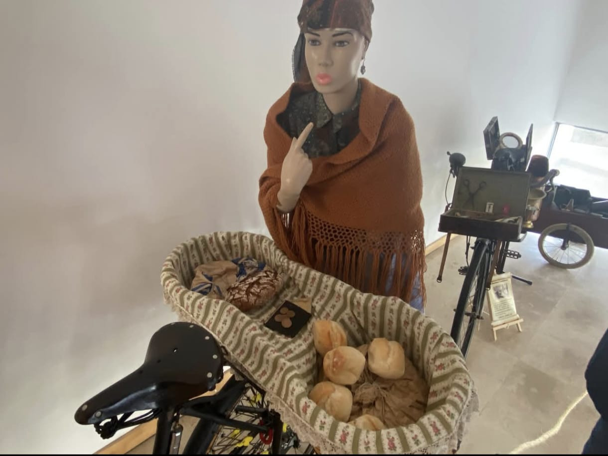
Bicicletas com Histórias “Profissões de Antigamente”
Bicicletas com Histórias “Profissões de Antigamente” é uma exposição que nos faz recuar no tempo através de exemplares de profissões antigas que utilizaram bicicletas.
Património, memória e cultura sobre rodas
Desfile Histórico de Bicicletas Antigas da Bairrada
Serviços

Bicicletas com Histórias “Profissões de Antigamente” é uma exposição que nos faz recuar no tempo através de exemplares de profissões antigas que utilizaram bicicletas.
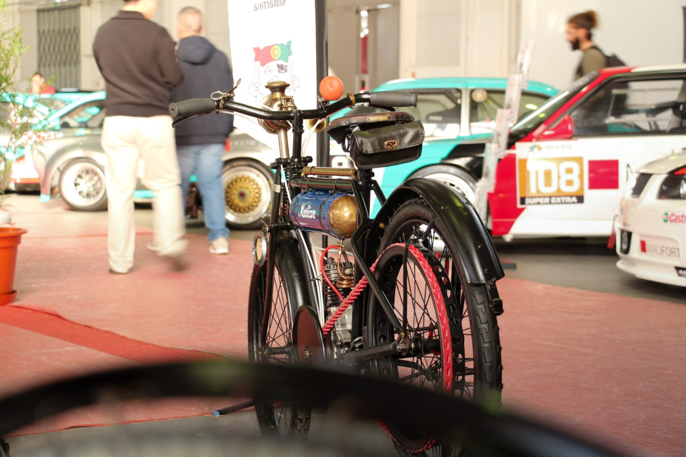
É uma exposição que nos leva à introdução do motor em velocípedes, numa fase em que o barulho dos cascos dos cavalos nas ruas começou a ser substituído pelo roncar dos motores.

É uma exposição que nos faz recuar no tempo da Segunda Guerra Mundial, onde percebemos a importância da bicicleta como meio de transporte.
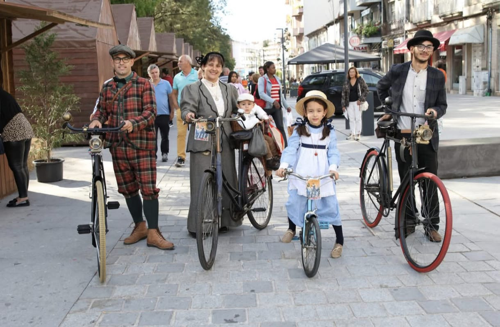
É uma representação onde, através de trajes de época juntamente com a bicicleta, revivemos as memórias do passado.
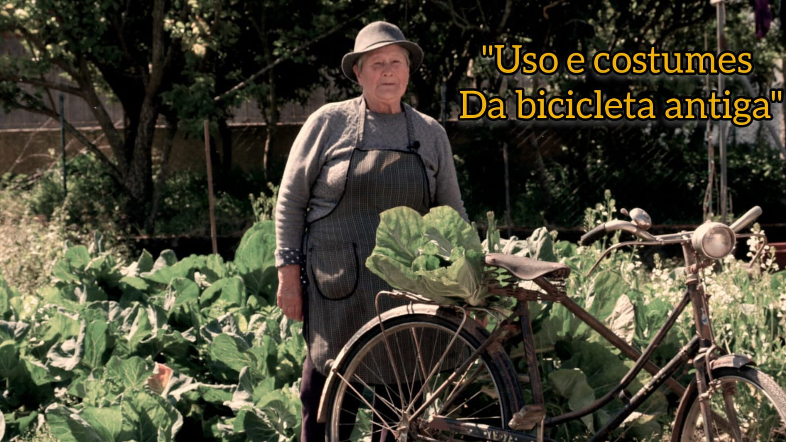
É um documentário com a duração de 1h10m que retrata a ligação entre o homem, a mulher e a bicicleta antiga.
Nosso Trabalho
Cada imagem abre uma página individual, com mais contexto e galeria própria, à semelhança do site original.
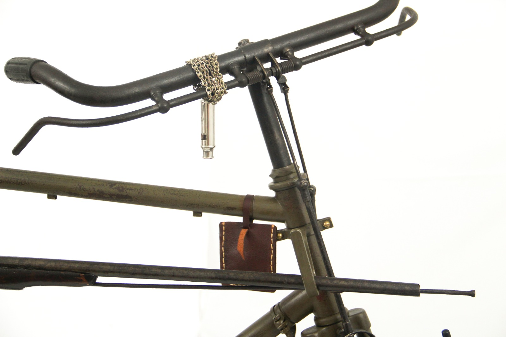
Desfile Histórico de Bicicletas Antigas da Bairrada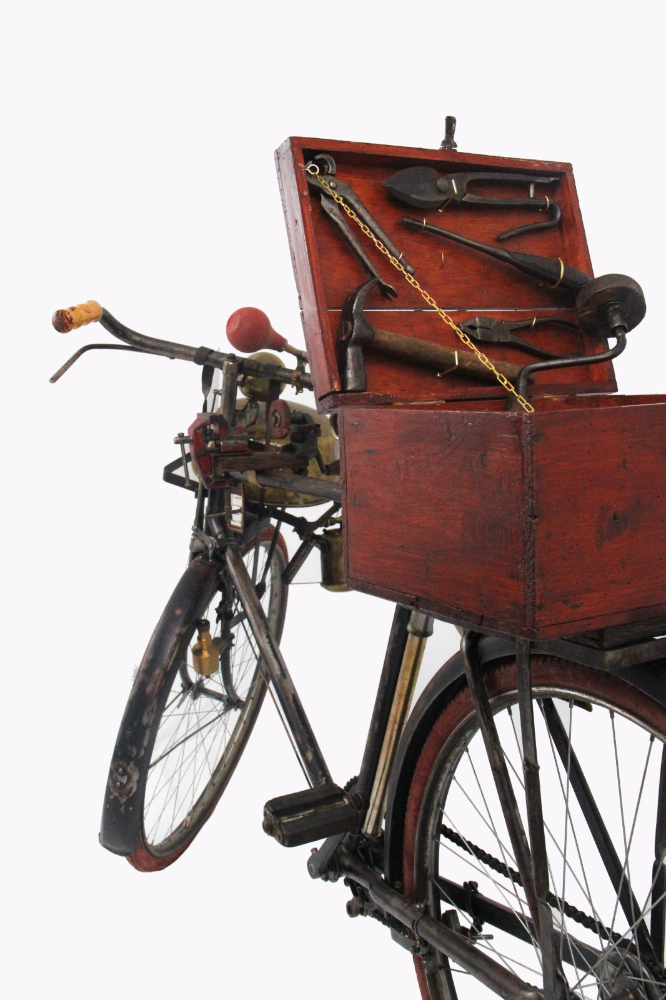
As Bicicletas na Segunda Guerra Mundial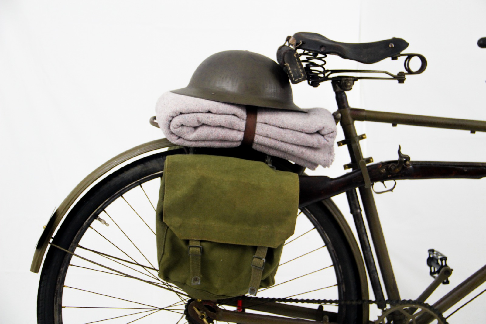
Velocípedes com Motor Auxiliar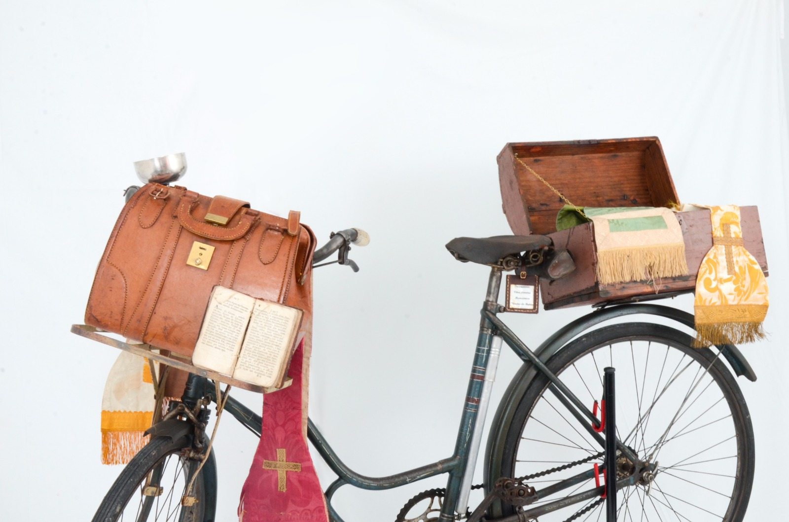
Figuração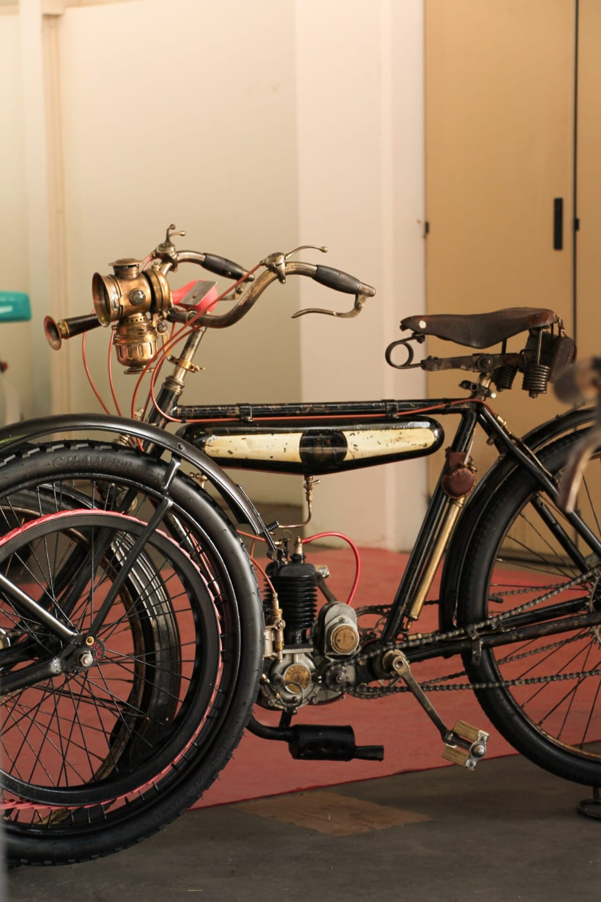
Documentário “Usos e Costumes da Bicicleta Antiga”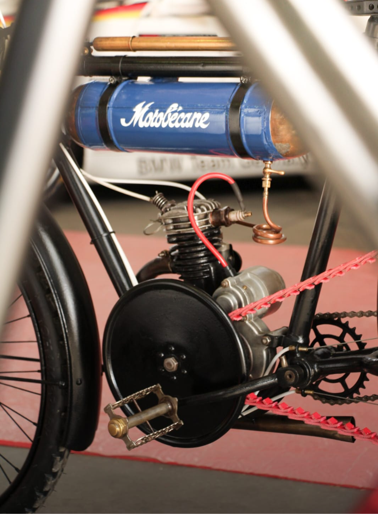
Bicicletas com Histórias “Profissões de Antigamente”Quem Somos
Relíquias da Bairrada é um grupo de amigos com gosto pelo colecionismo na vertente do mundo das duas rodas, com ou sem motor, e também pelo automóvel antigo. Partilhamos essa paixão através de exposições temáticas e design cenográfico que contam histórias e despertam emoções.
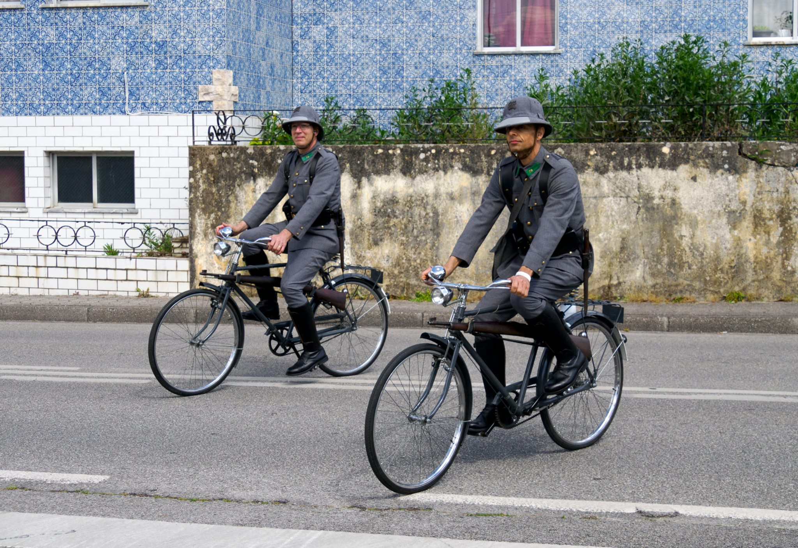